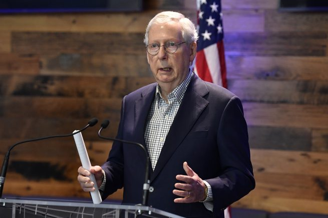
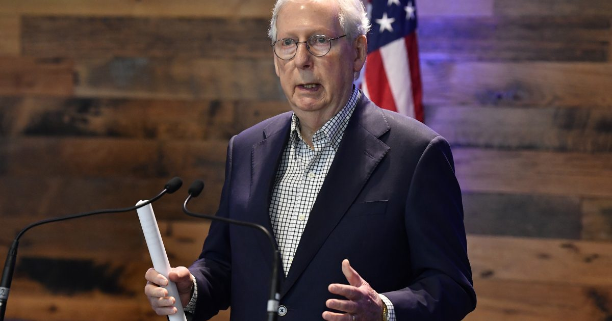

McConnell: The private sector needs to stop acting like a ‘woke parallel govt.’

OAN Newsroom
Major League Baseball’s decision to move the All-Star Game out of Georgia will reportedly cause the tourism industry to lose out on $100 million.
The Cobb County Travel and Tourism Bureau said the rescheduled game will negatively impact both the county and state, further slowing economic recovery efforts in the region.
This comes as the league decided to move the All-Star Game out of Atlanta in response to the state’s passage of a new voting law, which imposes identification requirements for voters.Critics have said the legislation will suppress minority voters while proponents of the law argue the bill will promote election integrity.
Senate Minority Leader Mitch McConnell (R-Ky.)took aim at corporate America for bending to the will of leftist ideals.In a statement Monday, he warned there would be 'serious consequences' if the private sector doesn’t stop acting like a 'woke parallel government.'
His comments came after the MLB made the decision to move the game based over the states new voter laws.Several other companies have also caved to the left by issuing negatives about election integrity laws nationwide.
McConnell noted, Americans don’t want big businesses to 'amplify disinformation' or 'react to every manufactured controversy.'
Our private sector must stop taking cues from the Outrage-Industrial Complex.Americans do not need or want big business to amplify disinformation or react to every manufactured controversy with frantic left-wing signaling.My full statement: https://t.co/3Ck3qW4Mbe — Leader McConnell (@LeaderMcConnell) April 5, 2021
Meanwhile, Sen.Marco Rubio (R-Fla.)suggested the MLB commissioner is being a hypocrite for moving the All-Star Game out of Georgia and keeping his membership with Georgia’s most prestigious golf club.He sent a letter to Commissioner Rob Manfred on Monday, asking if he would terminate his membership with Augusta National.This is an exclusive members-only club and annual host of The Masters.
Dear GOP:@MLB caves to pressure moves draft #AllStarGame out of Georgia on the same week they announce a deal with a company backed by the genocidal Communist Party of #China Why are we still listening to these woke corporate hypocrites on taxes, regulations anti-trust?https://t.co/GWToVhAZvW — Marco Rubio (@marcorubio) April 2, 2021
Rubio and other Republicans alike are calling it a political stunt that 'reeks of hypocrisy.'
Posted On: 2021-04-05T00:00:00

Content Date: 2021-04-05
Download Date: 2021-04-16
Document ID: L0C049ZQO